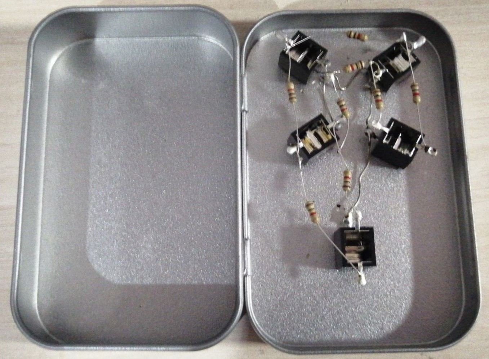
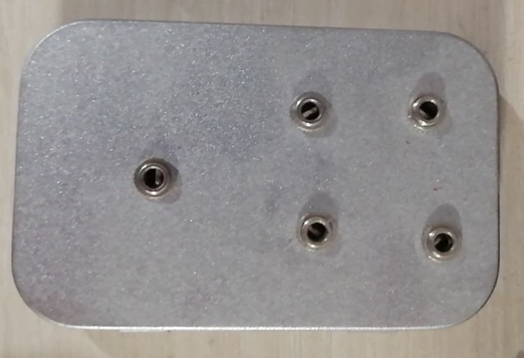

Bethany Davis
Mixer
What does it do?
- The mixer I made is a small 4 in 1 out 3.5mm passive mixer which runs in series, based off a schematic I found online, so that I can
mix 4 sources into 1 output. It fits inside a small tobacco tin, and features no controls beyond the 3.5mm ports themselves, and the
order in which you plug them in. It’s reasonably effective, especially at being able to record from multiple sources into one device at
the same time, and as it features no moving parts beyond the hinges of the tin, it’s lasted a fairly long while for what was otherwise a
much cheaper, and more fun and personal alternative to buying one out right. It also takes a little set up to get the correct balance because
of the lack of control, but if the sources are managed before sending out the signal, it can be quite effective, especially considering
the cost/performance ratio.
Inside of the mixer, the bottom jack is the output
Why did I make it?
- Firstly, for what was otherwise a hobby project playing synthesizers, cost was a major factor. Many of the available mixers were quite
expensive, and had more features than I needed. Even the feature free ones were still fairly expensive in a relative sense. Given that the
other option was recording parts separately, and this wasn’t so much a major problem as an inconvenience, my other solution was to create
this. Following a simple online tutorial , and purchasing the right
parts turned my problem into an amusing short project which I still use every now and then, despite having since sold my synthesizers. While
it’s not so much a particularly complicated project, I like to think it illustrates more of an approach to small problems. Rather than paying
through the nose for an established solution, I sometimes like to approach an issue more creatively, and come out with something that does
the job as well as is necessary without costing the earth in a relative sense, especially if it requires the sacrifice of a lazy Sunday
afternoon, and gives me an excuse to break out the soldering iron.
Outside of the mixer, the bottom jack is the output